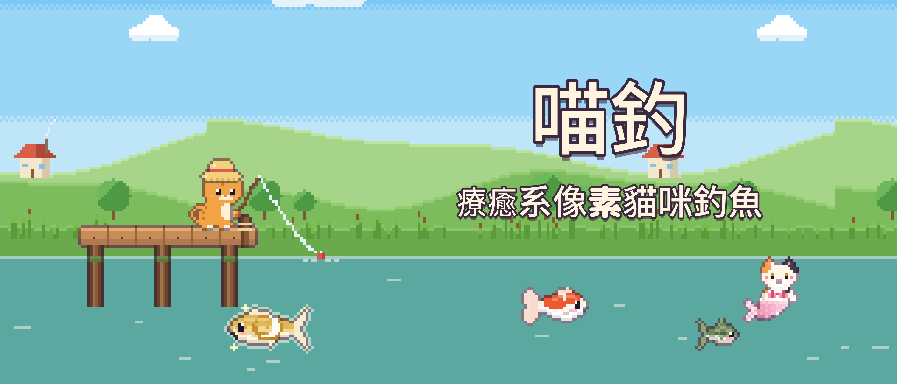
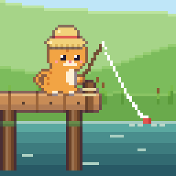
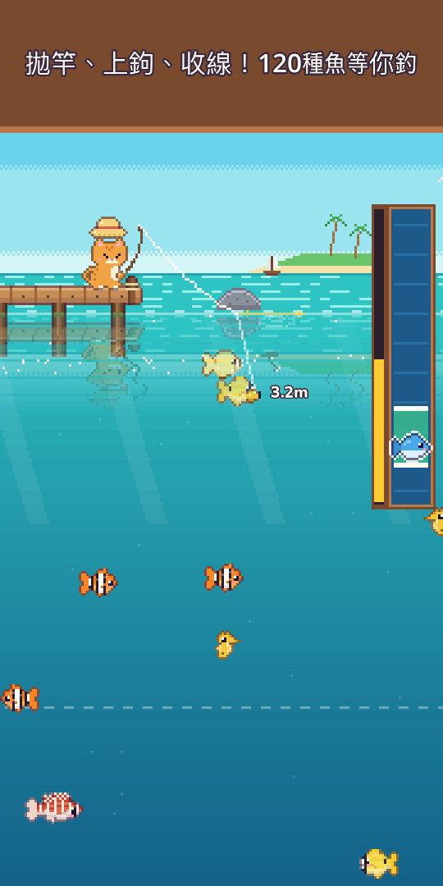
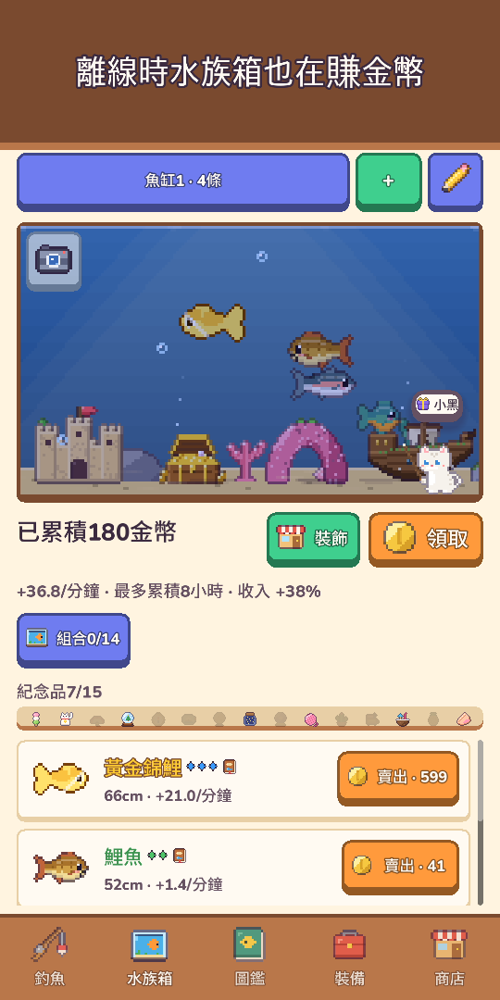
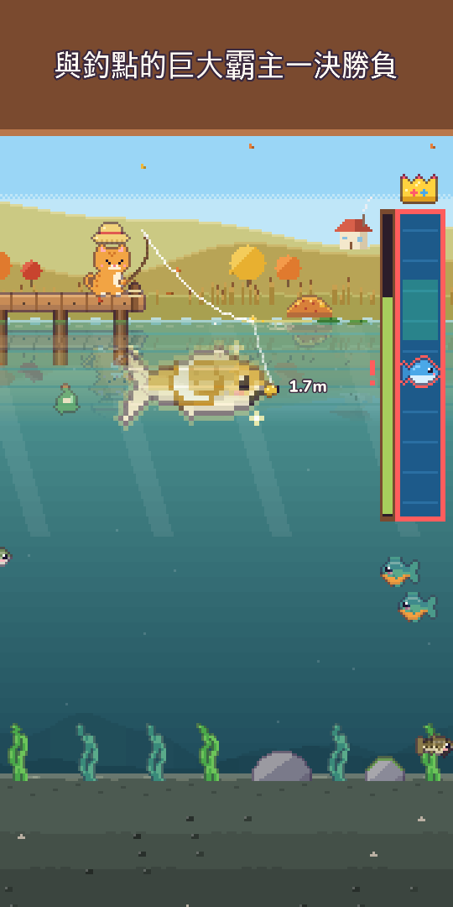
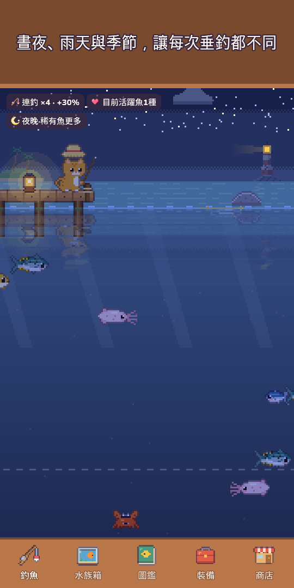
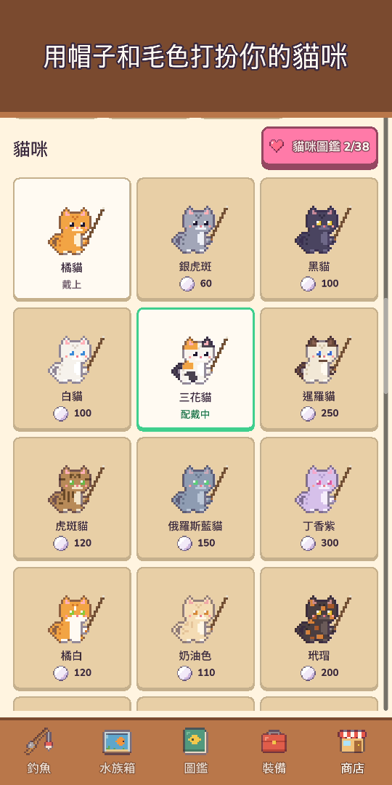
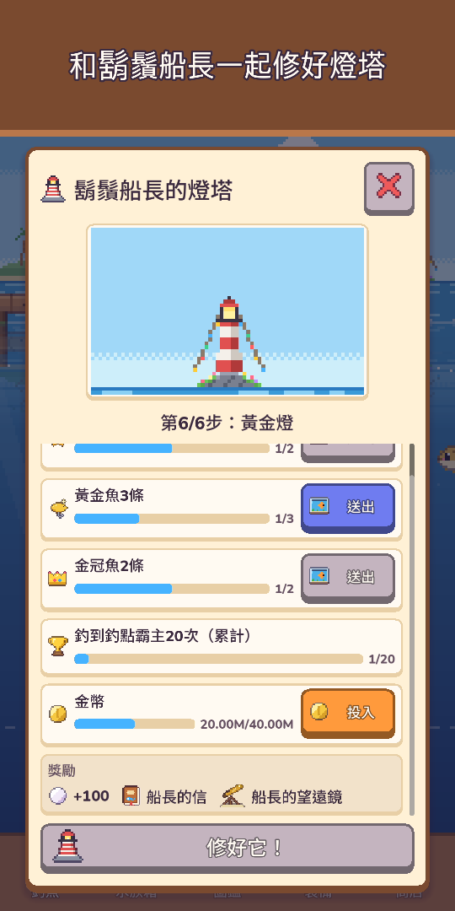
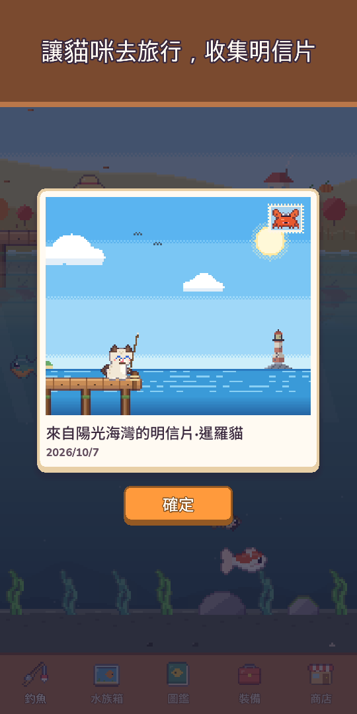

喵釣：像素釣魚水族箱
療癒系像素貓咪釣魚
帶上釣竿和潛水服！釣起120種魚，潛入水下拍攝海洋生物，邂逅比傳說還稀有的貓咪人魚。








跟著小貓一起，出發去一場暖呼呼的釣魚小旅行！
《喵釣》是一款單指就能輕鬆玩的可愛像素釣魚遊戲。長按拋竿，把魚餌引到水裡看得見的魚兒旁邊，再用收線條享受上鉤的手感，把牠穩穩釣上來！
- 單手操作長按拋竿 · 左右拖曳引導魚餌 · 按住收線。浮標一沉立刻輕點就是揚竿成功，搶先一步（不點也沒關係）。漣漪、水花、震動回饋，金幣咻咻飛進錢包
- 10個釣點、120種魚草原池塘、山間溪流、陽光海灣、珊瑚礁、冰封湖、深淵、沉沒神殿、雲之湖、火山島、紅樹林
- 稀有黃金魚、稀有魚群，月光鯉、星空鯨等傳說之魚，還有每天出現一次的釣點霸主
- 潛水探索穿上潛水服在每個釣點暢游，拍下釣不到的生物收入照片圖鑑，打開手電筒還能找到藏在水底的深處洞穴
- 貓咪人魚每個釣點住著一隻比傳說還稀有的貓咪人魚，可以請她住進水族箱，或放生獲得幸運祝福
- 25種路亞 · 5個等級路亞越好，稀有魚越愛咬鉤，還有召喚人魚和傳說的特別路亞。和大魚硬拼太久，釣線可能會斷喔！
- 會變化的天空晝夜隨裝置時間變化，雨、雪和彩虹會影響魚況，點流星還能拿珍珠；四季風景與真實月相，每個釣點可看未來6小時天氣，閃閃發光的金色水波處更容易釣到大魚
- 圖鑑不少魚有最愛的時段（夜晚、雨天、黎明或某個季節），抓準時機；最大紀錄贏得金冠；首次釣到時的天空（時間、天氣、季節、釣點）也會記在圖鑑裡
- 水族箱放進去的魚離線時也在賺金幣。用沉船、珊瑚拱門等裝飾布置，湊齊魚缸組合提升收入，魚缸佈局可用短代碼分享；點一下魚就能看到釣到的地點、入缸日期和相伴天數
- 貓咪生活與收集從青蛙帽到王冠，還有毛色、季節帽子和舒適的貓咪小窩。派家裡的貓咪來一趟3小時的貓咪旅行，帶回像素明信片；離開一陣子再回來，貓咪日記裡會多一句話
- 鄰居與節日鄰居貓咪會來水族箱作客並留下紀念品，友情等級提升後解鎖新對話、小禮物和摯友帽子。每週釣魚大賽、每月一起釣魚、每週來客魚，以及每年五大節日（櫻花祭、夏日祭、萬聖節、聖誕節、新年祭）——集印章兌換永久保留的限定裝飾
- 收集燈塔守護者鬍鬚船長寄出的瓶中信，一起修復老燈塔
- 按自己的步調成長升級釣竿、捲線器、釣線、魚餌與魚缸；用釣到的魚製作魚餌專釣這種魚（傳說魚除外）；每日委託與每日禮物（漏簽也不會從頭開始），還有陪伴天數禮物
- 療癒小彩蛋隱藏按鈕、只欣賞風景的風景模式；釣魚日誌裡的相簿保存最近12張水族箱和貓咪小窩照片；每天找出躲在風景裡的小傢伙，還能得珍珠
- 支援離線，隨時隨地都能玩
基本免費遊戲。可依需求購買珍珠禮包、新手禮包與支持者禮包（免看廣告領獎勵、王冠帽子、離線收益上限加倍），不花錢也能釣齊全部120種魚。
沒有強制廣告，也沒有橫幅廣告。廣告只有你自己選擇觀看的獎勵廣告，例如賣魚雙倍。
今天會釣到什麼魚呢？快來拋一竿吧！